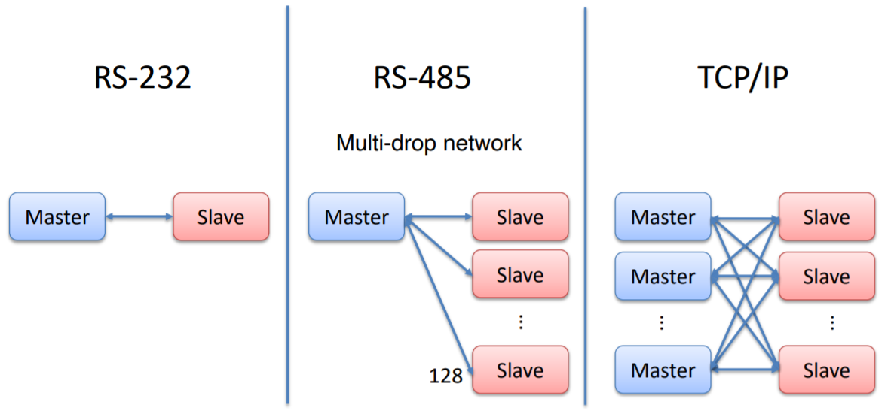

# 历史溯源
Modbus 是由 Modicon 公司（现在的施耐德电气 Schneider Electric）在 1979 年开发的一种消息传递结构，为使用可编程逻辑控制器（PLC）通信而发表，用于在智能设备之间建立客户端 - 服务器通信；这是一个划时代、里程碑式的网络协议，因此为工业网络拉开了序幕。Modbus 已经成为工业领域通信协议事实上的业界标准，并且现在是工业电子设备之间常用的连接方式。
Modbus 在工业环境下很流行，因为它是公开发表并且无著作权要求的。它是为工业应用开发的，与其他标准相比，它相对易于部署和维护，除了要传输的数据格式的大小外，几乎没有其他限制。Modbus 通常使用 RS485 作为其物理层。
# 发展史
Modicon，即今天的施耐德电气，于 1979 年向市场推出了 Modbus 原始协议（Modbus ASCII 和 Modbus RTU）；随着通信领域的迅速发展以及传输速度的提高，扩展版本 Modbus Plus（Modbus + 或者 MB+）紧接着出现，不过此协议是 Modicon 专有的，和 Modbus 并不相同；直到以太网技术的标准化和商品化，以太网成为了企业系统的业界标准，同时也成为了工业网络的业界标准；为了将 Modbus 带入 21 世纪，一个开放的 Modbus TCP/IP 规范于 1999 年修订发行；到了 2004 年 4 月，Modbus 协议从施耐德电气转移到 Modbus 组织，这标志着对开放的承诺（该规范可免费下载，并且使用 Modbus 或 Modbus TCP/IP 协议无需后续许可费用）；至此，在 Modbus TCP/IP 因为它的开放性、简单、低成本的开发以及支持它所需的最少硬件等特点，存在多个 Modbus TCP 变种，而 Modbus ASCII 和 Modbus RTU 在小型的嵌入式设备当中得到广泛应用。
<br/>
# 协议版本
Modbus 协议目前存在用于串口、以太网以及其他支持互联网协议的网络的版本。
Modbus 是一种请求 / 回复协议，提供由功能代码指定的服务。Modbus 功能代码是 Modbus Request (请求) / Response (响应) PDU 的元素。
串行端口和以太网存在多种版本的 Modbus 协议，最常见的是：
- Modbus RTU
- Modbus ASCII
- Modbus TCP
- Modbus Plus

# Modbus RTU
Modbus RTU 是一种紧凑的，采用二进制表示数据的方式；因为使用二进制编码和 CRC 错误检查的结合使得 Modbus RTU 适用于工业应用，因为它比 ASCII 字符的替代方案更有效地传输。在 Modbus RTU 与 ASCII 之间进行选择时，如果考虑性能，则 RTU 是首选。
# Modbus ASCII
Modbus ASCII 是当设备设置为使用 ASCII （美国信息交换标准代码）模式时，在 MODBUS 串行线上把通信消息中的每个 8 位字节将作为两个 ASCII 4 位字符发送。当物理通信链路或设备的功能不允许符合 RTU 计时器管理要求时，使用此模式。所以此模式的效率不如 RTU，因为每个字节需要两个字符。示例：字节 0x7D 编码为两个字符： 0x35 和 0x42 （在 ASCII 表中为 0x37 = '7' ，而 0x44 = 'D' ）。
# Modbus TCP
Modbus TCP 是在 TCP/IP 网络上运行的 Modbus 的实现，旨在允许 Modbus ASCII / RTU 协议在基于 TCP / IP 的网络上传输。Modbus / TCP 将 Modbus 消息嵌入 TCP / IP 帧内。尽管实现起来非常简单，但是与网络相关的特性增加了一些挑战。例如，由于 Modbus 主机期望并要求在一定时间范围内对其轮询做出响应，因此必须考虑 TCP / IP 网络的不确定性（和其他方面）。Modbus ASCII 和 Modbus TCP 之间的主要区别在于，Modbus ASCII 所需的 LRC 错误检查由 IP 层执行。
对于以上
TCP/RTU/ASCII的这三种通信协议在数据模型和功能调用上都是相同的，只有封装方式是不同的。
# Modbus Plus
Modbus Plus （Modbus + 或者 MB+）属于 Modbus 的一个扩展版本，不过此协议是 Modicon 专有的，和 Modbus 不同。它需要一个专门的协处理器来处理类似 HDLC 的高速令牌旋转。它使用 1Mbit/s 的双绞线，并且每个节点都有转换隔离设备，是一种采用转换／边缘触发而不是电压／水平触发的设备。连接 Modbus Plus 到计算机需要特别的接口，通常是支持 ISA（SA85），PCI 或者 PCMCIA 总线的板卡。
# 通信和设备
Modbus 有下列三种通信方式：
（1）以太网：对应的通信模式是 Modbus TCP/IP
（2）异步串行传输（各种介质如有线 RS-232/422/485/、光纤、无线等）：对应的通信模式是 Modbus RTU 或 Modbus ASCII
（3）高速令牌传递网络：对应的通信模式是 Modbus PLUS
Modbus 通过多种类型的物理介质进行通信，例如：
- 串行 RS-232
- 串行 RS-485
- 串行 RS-422
- 以太网
Modbus RTU 和 Modbus ASCII 协议应用于串口链接（RS232、RS485、RS422），Modbus TCP/IP 协议应用于以太网链接。

# 消息结构
Modbus 的主要消息结构是点对点，能够在点对点和多点网络上运行。

Modbus 协议遵循 ** 主 / 从（客户端 / 服务器）** 架构，主（客户端）向从（服务器）发送请求并等待响应。注意！目前 Modbus 中使用的术语 “主” 和 “从” 已被术语 “客户端” 和 “服务器” 所取代了。

# 常见 Modbus 开源库
# FreeModbus
FreeMODBUS 是流行的 Modbus 协议的免费实现，专门针对嵌入式系统。FreeMODBUS 提供了 Modbus 应用协议 v1.1a 的实现，并支持 Modbus over serial line 规范 1.0 中定义的 RTU/ASCII 传输模式 ；自 0.7 版以来，FreeModbus 还支持 Modbus/TCP；0.9 版添加了第一个 Modbus/TCP 端口嵌入式使用 LWIP TCP/IP 堆栈的系统。唯一可惜的是，该 FreeMODBUS 只对从机开放了源码，主机部分并未实现开源。
以下是该 FreeMODBUS 的下载链接：
https://www.embedded-experts.at/en/freemodbus-downloads/
# libmodbus
libmodbus 是一个多平台的 Modbus 源库，适用于 Linux、Mac OS X、FreeBSD、QNX 和 Win32 等操作系统；可以根据 Modbus 协议发送和接收数据。支持 RTU（串行）和 TCP（以太网）通信。
以下是该 libmodbus 的下载链接：
https://libmodbus.org/download/
# 参考
Modbus 主页
Modbus - wiki
WHAT IS MODBUS?
《modbus communication manual》
《MODBUS APPLICATION PROTOCOL SPECIFICATION V1.1b》
《Modbus Fieldbus Networking》
《Modbus Protocol Reference Guide》
Modbus RTU 通信指南
高级 Modbus ASCII 教程
modbus tools